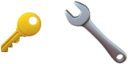
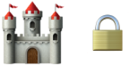

Омонимы
Омонимы — слова, принадлежащие к одной и той же части речи и одинаково звучащие, но различные по значению.
Виды омонимов
Омографы
Совпадают в написании, различаются ударением
Замок - замок
Омофоны
Совпадают в звучании, различаются написанием
Плод - Плот
Омоформы
Совпадение звучания отдельных форм слов
Печь (сущ.) - Печь (гл.)
Примеры омонимов
 Ключ
 Замок
Загадки
Когда я с т на мне плывут,
Когда я с д, меня сорвутС к я слезы вызываю,
с г цветами удивляю
Тест
Синоним к слову "..."